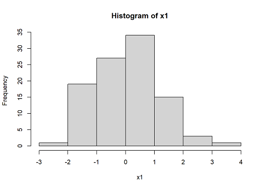
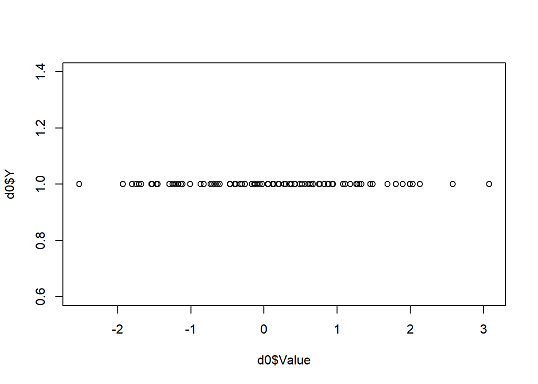
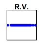
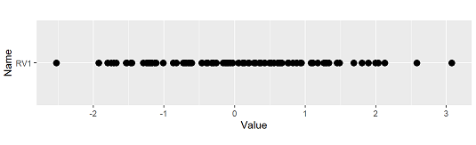
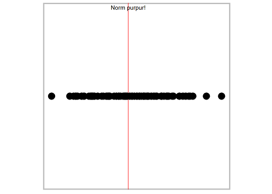
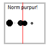
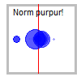

確率変数ぷるぷる君をつくろう
アニメーションによる統計学習サイトの原案は、2022年春の「確率変数ぷるぷる君を作ろう」というお遊びです。そのきっかけは、日本心理学会主催、春の数学ワークショップでした。以下の文章および画像は、当時書いたR Markdownによる生成文書を移植したものです。
きっかけ
日本心理学会が主催した春の数学ワークショップに参加して、確率統計について学んだ。そこで、講師の清水先生の面白過ぎる表現に出会う。
「確率変数は、ぷるぷるしているんです。マリオカートのハテナボックスが回っている感じ。あれが確率変数で、ぱっと止まってアイテムが決まりますね、あれが確率変数の実現値。」
マリオカートなるゲームを知らないのでYouTubeで実況動画を見て「なるほど」と納得。要するに、と次のようなイメージ。
- 何が出るかの候補（値の範囲）は決まっている（背後に確率分布があるから）
- 実際の値は、スナップショットを撮ったときに決まる（つまりこれが実現値）。
※追記：MARIOPEDIAによると、「アイテムボックス」というのがその名称のようで、「カートに乗りながらこの箱にぶつかることでルーレットが発生し、概ねランダムでアイテムが取得できる。」と説明されています。アイテム一覧は、同サイトの「マリオカートシリーズのアイテム一覧」に。
そこで、「確率変数ぷるぷる君」なるマンガがあったら面白かろうと思ったが、あいにくマンガを描く才能はないので、そのうち絶賛募集中にすることにして、確率変数のイメージをRで可視化することに挑む。題して、ぷるぷる君1号を作ろう！
可視化に挑戦！
ぷるぷる君1号の完成イメージとして、「ぷるぷる君」が、四角い顔をぷるぷるさせているところをイメージした。で、スナップショットを撮ると、顔がある値を示してぴたりと止まっているのだが、ぷるぷる君本人は、依然としてぷるぷるしているのである。さしあたり、ぷるぷる君1号は正規分布に準ずることにする。
正規乱数を作って表示する
正規分布に従う乱数は、関数 rnorm(n, mean, sd) で作る。平均や分散をいじるのはもっと後にして、標準正規分布（平均0、分散1）を採用。とりあえず、n=100 で。0を中心に、おおむね-3から3の間に分布するはずである。（Nが小さいので、それなりに歪む。）
x1 <- rnorm(100, 0, 1) # mu=0, var=1 の正規乱数。 x1[1:10] hist(x1)

乱数をX軸上に並べてみる
「ぷるぷる」する感じをどうやったら出せるか考えた結果、横軸上に並んだ点（実現値）が、順に表示されては消え、表示されては消え、しているようにすれば、「ぷるぷる」に見えはしないかと考え、とりあえず1列に並べて表示することを考えた。わざわざ、データフレームd0を作っているのは、後から表示調整のための変数を追加したいと思ったため（後述）。
- 「Index」：後で使う関数で、各行について一意の数が設定されていたほうがいいような感じがしたので。
- 「Name」：いずれ2号や3号と並べて表示するときに区別するために。
- 「Y」：Y軸の数値ですべて同じ数（さしあたり1）。
d0 <- data.frame("Index"=1:100, "Name"="RV1", "Y"=1, "Value"=x1)
head(d0)
plot(d0$Value, d0$Y)

プロット領域の設定をして「1号」らしく
「ぷるぷる君」の完成イメージは四角い顔だったので、描画領域を正方形にして、軸の目盛りなども表示しないように調整する。par() 関数の設定はオプションが多くて複雑。とりあえず、それらしい感じができたので良し。
par(fin=c(2,1), # 描画サイズ（インチ）
mar=c(0,0,1,0), # マージン：タイトルのために上だけ1
pty="s", # 正方形のプロット
xaxt="n",yaxt="n") # 軸を描かない指定
plot(d0$Value, d0$Y, main="R.V.", pch=16, col="blue")

animate関数を使うために、まずggplot
で、この領域を使って、d0を1行目から順に表示させて行けば、ぷるぷるしているように見えるだろうと思ったのだが。短時間でグラフィックを更新する、というスクリプトを書くのは相当手間。というか、Rで書けそうな気がしない。
で、検索すると、ggplotライブラリの仲間にanimateという関数があるらしく、これを使うと、要するにアニメーションGIFが作れるらしい。インタラクティブに表示することはできないようだが、イメージを描くことだけはできそう。
ということで、さしあたり、ggplotでさっきと同じ表示ができるように、描画の設定をする。ていうか、par()関数で設定してもggplotが無視するのだ。
g0 <- ggplot(data=d0, aes(y=Name, x=Value)) + # 変数の設定 geom_point(size=3) + # 点をうつ関数 scale_x_continuous(breaks=seq(-3,3,1)) + # 軸の設定 coord_fixed(ratio = 1) # 縦横比を固定 g0

せっかくなのでもう少し完成度を上げてみる。テーマを設定して使いまわせるようにした。なんちゃら = element_blank()とかいう書き方を理解するのにかなり苦労したなあ。
theme.prpr1 <- theme(
aspect.ratio = 1, # 縦横比１：１, 次の行は色の設定
panel.background = element_rect(fill="white", size=2, colour="grey"),
panel.grid = element_blank(), # グリッドなし
axis.title = element_blank(), # 軸名なし
axis.text = element_blank(), # 目盛り名なし
axis.ticks = element_blank(), # 目盛りなし
axis.line = element_blank() # 線なし
)
g0 <- ggplot(data=d0, aes(y=Name, x=Value)) + # データ
geom_vline(aes(xintercept=0), colour="red") + # 平均値（赤線）
geom_point(size=6) + # 点をうつ
scale_x_continuous(breaks=seq(-3,3,1)) + # X軸の設定
coord_fixed(ratio = 1) # 縦横比1:1固定
g1 <- g0 + theme.prpr1 +
annotate("text",x=0,y=Inf,label="Norm purpur!",vjust=1.5)
g1

いよいよアニメーションさせるぜ！
と、それなりに準備ができたので、アニメーションさせてみる。いったん表示させたものをどのくらいの長さ残しておくのかとか、オプションの設定がけっこう微妙なのだが、まあ、こんなもんだろう。fps=20の数字をもっと大きくすれば、もっと忙しく動くはず。いや、しかし。「ぷるぷる君」というよりも「きょろきょろ君」だな。
g2 <- g1 + transition_states(Index,transition_length = 6) +
shadow_wake(wake_length = 0.3)
animate(g2, width=100, height=100, fps=20) -> g3
g3
anim_save("prpr-kun-1go.gif", g3)

確率密度を点の大きさに反映させてみよう
ここまでやってみて思ったことは、領域の端の方、つまり確率密度の低い部分に点が現れるときも、中心部に現われるときも、点の大きさが同じで、なんかつまらない。と思ったので、確率密度を点の大きさに反映させるようにしてみる。中心部では点が大きくなって、この辺の値は出やすいんだぞ～～とアピールするのである。ここで、確率密度「Density」と、それをもとに計算した「Size」を変数に追加した。
d0$Density <- dnorm(d0$Value, 0, 1)
d0$Size <- d0$Density / dnorm(0, 0, 1) * 12 + 2
g0 <- ggplot(data=d0, aes(y=Name, x=Value)) +
geom_vline(aes(xintercept=0), colour="red") +
geom_point(size=d0$Size, alpha=0.75, colour="blue") +
scale_x_continuous(breaks=seq(-3,3,1)) +
coord_fixed(ratio = 1) # 縦横比を1:1に固定する
g1 <- g0 + theme.prpr1 +
annotate("text",x=0,y=Inf,label="Norm purpur!",vjust=1.5)
g2 <- g1 + transition_states(Index,transition_length = 4) +
shadow_wake(wake_length = 0.2)
animate(g2, width=100, height=100, fps=20) -> g3
g3
anim_save("prpr-kun-1go.gif", g3)

終わりに
以上。アニメGIF画像として保存してあるので、いつでもぷるぷる君に会える。楽しい。（楽しいのか？）
本当は、インタラクティブに動くように、つまり、（期待値はともかく、）分散をいじると、ぷるぷる具合が変わるとか、確率分布を入れ替えると、ぷるぷる具合が変わるとか、確率変数をいくつか集めて（1号～5号とか）、その平均を同じようにぷるぷるさせると、なるほど、確率変数の平均は、ちゃんと、分散が小さくなるね！というのを見られたりするとか。
誰か作ってください。（供養終了）